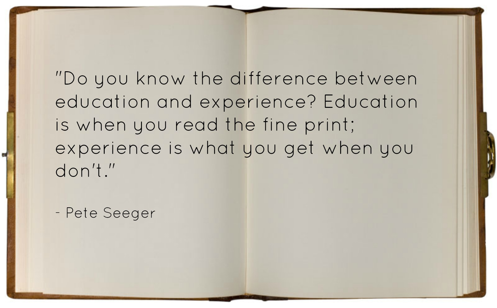

After primary and secondary school, I think I have learned a lot. I also missed the environment of schools and realize that I already passed the schools life which is means that I starting to grown up and be ready to face the new real life and world.
After that, I continued my studies to UiTM Machang Kelantan and take Diploma in Information Management. This makes me realized that I am now in the stage as university student which is means that I am getting more difficult things than school life.
With 2 and half year during my time in university as Diploma student, I gaining and learned more experiences. This makes me become more mature than before.
After Diploma, I continued my studies at UiTM Sungai Petani Kedah and take Degree in Library Science for about 2 and half year. I hope this will make me more matured when I graduate to start the new life into real world which is full with many kinds of people.
